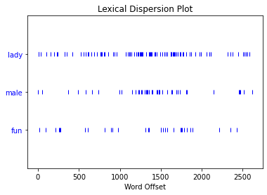

NLTK research questions
Contents
NLTK research questions#
# On Jupyter - run this cell
import nltk
from nltk.corpus import stopwords
from nltk.stem import WordNetLemmatizer
# on Colab -- run this cell
import nltk
from nltk.corpus import stopwords
nltk.download('stopwords')
nltk.download('wordnet')
nltk.download('omw-1.4')
nltk.download('punkt')
[nltk_data] Downloading package stopwords to
[nltk_data] /Users/filipacalado/nltk_data...
[nltk_data] Package stopwords is already up-to-date!
[nltk_data] Downloading package wordnet to
[nltk_data] /Users/filipacalado/nltk_data...
[nltk_data] Package wordnet is already up-to-date!
[nltk_data] Downloading package omw-1.4 to
[nltk_data] /Users/filipacalado/nltk_data...
[nltk_data] Package omw-1.4 is already up-to-date!
[nltk_data] Downloading package punkt to
[nltk_data] /Users/filipacalado/nltk_data...
[nltk_data] Package punkt is already up-to-date!
True
nltk personals corpus#
# import our list of books from the NLTK library
from nltk.book import *
*** Introductory Examples for the NLTK Book ***
Loading text1, ..., text9 and sent1, ..., sent9
Type the name of the text or sentence to view it.
Type: 'texts()' or 'sents()' to list the materials.
text1: Moby Dick by Herman Melville 1851
text2: Sense and Sensibility by Jane Austen 1811
text3: The Book of Genesis
text4: Inaugural Address Corpus
text5: Chat Corpus
text6: Monty Python and the Holy Grail
text7: Wall Street Journal
text8: Personals Corpus
text9: The Man Who Was Thursday by G . K . Chesterton 1908
# check out text8, the personals ads, first 20 words
text8[:20]
['25',
'SEXY',
'MALE',
',',
'seeks',
'attrac',
'older',
'single',
'lady',
',',
'for',
'discreet',
'encounters',
'.',
'35YO',
'Security',
'Guard',
',',
'seeking',
'lady']
# how to find the length of the dataset, use len()
len(text8)
4867
# check the most frequent words, using nltk method "Frequency
# Distribution", that measures word frequencies
# first import the FreqDist class
from nltk import FreqDist
# then check the most common 15 words
FreqDist(text8).most_common(15)
[(',', 539),
('.', 353),
('/', 110),
('for', 99),
('and', 74),
('to', 74),
('lady', 68),
('-', 66),
('seeks', 60),
('a', 52),
('with', 44),
('S', 36),
('ship', 33),
('&', 30),
('relationship', 29)]
# notice that the text is not cleaned, since it's counting
# punctuation and stopwords.
# We need to write a loop that remove stopwords and punctuation
stops = stopwords.words('english')
personals_clean = [] # creating an empty list, to put new words in
for word in text8: # picking out each word in text8
if word.isalpha(): # checking if that word is in the alphabet
if word not in stops: # checking if that word is in stops
personals_clean.append(word.lower()) # adding to our list
# check the first 20 words -- we have a cleaner dataset now
personals_clean[:20]
['sexy',
'male',
'seeks',
'attrac',
'older',
'single',
'lady',
'discreet',
'encounters',
'security',
'guard',
'seeking',
'lady',
'uniform',
'fun',
'times',
'yo',
'single',
'dad',
'sincere']
# create a frequency distribution, the results are much better
# than before
FreqDist(personals_clean).most_common(15)
[('lady', 88),
('seeks', 72),
('male', 42),
('s', 36),
('looking', 34),
('ship', 33),
('slim', 33),
('fun', 31),
('attractive', 29),
('relationship', 29),
('build', 27),
('good', 26),
('seeking', 25),
('non', 25),
('smoker', 23)]
# let's try some nltk methods that we know, like dispersion_plot(),
# similar(), concordance()
# In order to use those methods, we first create an NLTK object
# for our text
personals = nltk.Text(personals_clean)
# check similar words for our top word in the FreqDist, 'lady'
personals.similar('lady')
seeks fem female looking women someone woman short
# create a concordance for 'lady'
personals.concordance('lady')
Displaying 25 of 88 matches:
sexy male seeks attrac older single lady discreet encounters security guard s
et encounters security guard seeking lady uniform fun times yo single dad sinc
en s e tall seeks working single mum lady fship rship nat open yr old outgoing
en phone fun ready play affectionate lady sought generous guy mutual fulfillme
afes beach c seeks honest attractive lady european background without children
lly secure children seeks attractive lady children i enjoy beach sports music
s walks beach single would like meet lady friendship view relationship austral
er with son living seeks nice caring lady likes children permanent lationship
al person life looking caring honest lady friendship relationship businessman
relationship businessman ish looking lady non smoker taller business outlook t
h modern outlook cuddly full figured lady plus sought australian gent early fi
g camping music love kids am looking lady similar interests aged friendship po
ependant standing mid looking classy lady wants retain privacy still retain in
inker fit active seeking slim medium lady friendship relationship limestone co
et attractive non smoking fun loving lady friendship view permanent relationsh
s dining etc outgoing guy late seeks lady size unimportant fun good times reti
od times retired gent like meet slim lady long term caravan travel heading dar
quiet nights seeks employed year old lady relationship clare barossa region no
financially secure seeks australian lady genuine relationship single mum welc
t long term relationship slim petite lady age years yo guy slim seeks yo femal
tall guy would like meet attractive lady long term relationship central victo
e dad teen daughters looking special lady fit healthy self emp tradesman ns se
tradesman ns seeks indian sri lankan lady ns olive dark complexion f dship pos
ker looking fship rship asian indian lady years romantic sexy country guy ns s
sexy country guy ns seeks similar ns lady fun friendship well dressed emotiona
# dispersion_plot() checks where certain words appear
personals.dispersion_plot(['lady', 'male', 'fun'])

# collocations() checks words that frequently go together
personals.collocations()
non smoker; would like; like meet; age open; social drinker; medium
build; quiet nights; long term; sense humour; med build; easy going;
nights home; poss rship; smoker social; financially secure; fship
poss; fun times; weekends away; single dad; similar interests
# common_contexts([]) checks the immediate words (context) surrounding
# our target word
personals.common_contexts(['lady'])
looking_non asian_sought seeks_age seeks_casual married_discreet
seeks_r single_discreet seeking_uniform mum_fship affectionate_sought
attractive_european attractive_children meet_friendship caring_likes
honest_friendship figured_plus looking_similar classy_wants
medium_friendship loving_friendship
patterns and research questions#
What patterns do you see emerging from your exploration? Use methods like: similar(), concordance(), collocations(), dispersion_plot(), common_contexts()
Results:
adjectives like ‘slim’, ‘fun’ are more common than ‘classy’
seems like it’s more men seeking out women, ‘common_contexts’